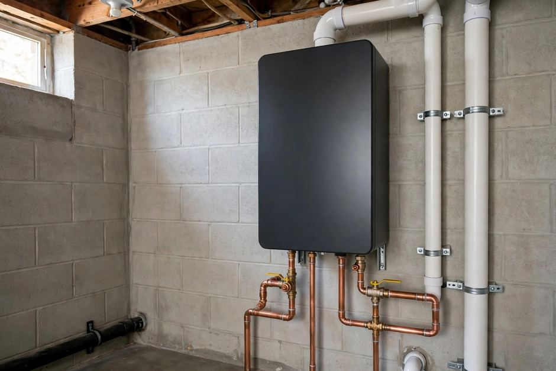
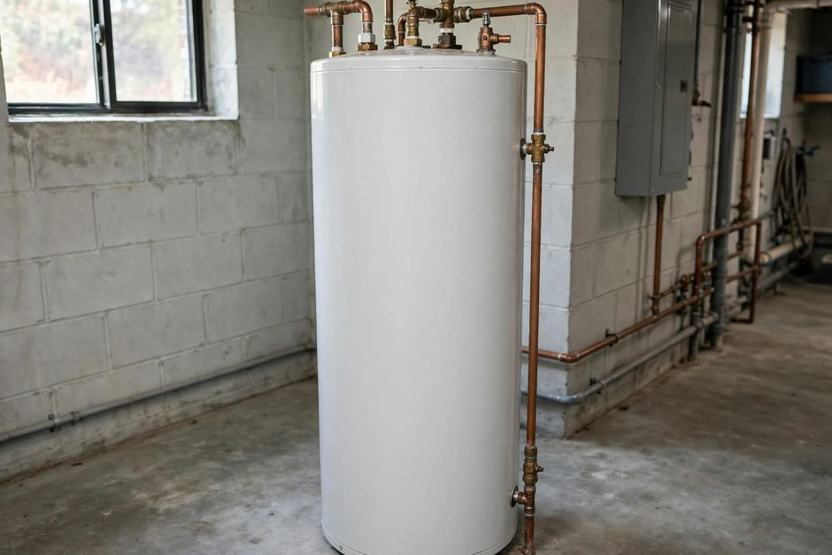
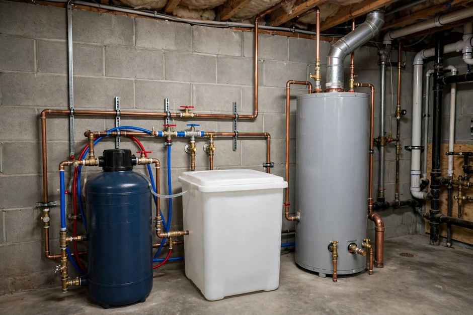

Tankless Conversion in Belleville, IL
Tankless Water Heater Installation in Belleville, Illinois
A tankless unit heats water as it passes through the unit, rather than storing heated water in a tank. Hinkle Plumbing Company handles tank-to-tankless conversion and new tankless installation in Belleville, IL, with sizing, venting, and connections reviewed for each home. For a storage tank replacement, see water heater installation in Belleville, IL.
Tank-to-tankless conversion and new tankless installation in Belleville, ILMonday through Friday, 8:00 AM to 4:30 PM. Closed Saturday and Sunday.Call (618) 677-6556 to discuss a tankless conversion
What Is Included
Tankless Conversion and Installation in Belleville, IL
A tankless conversion changes how hot water is produced and how the unit connects to water, venting, and fuel. Each item below is part of the conversion and installation work described on this page.
Sizing and Fixture Review
Hot water use is reviewed, including showers and kitchen and laundry fixtures, and periods when hot water runs at several fixtures. Sizing accounts for colder incoming water in colder months, with no single inlet figure assumed for Belleville.
Placement and Venting
Placement is reviewed for access, venting route, and distance to fixtures. Venting is arranged to suit the unit type and the location, with the route and termination discussed before installation work starts.
Water Piping Connections
Existing water piping is checked and connections are adapted to the tankless unit and its location. In older Belleville homes, expect to check for galvanized supply lines and earlier piping arrangements that affect connection work.
Gas Supply and Electrical Review
Gas supply capacity is reviewed for gas-fired units, and electrical capacity is reviewed for electric units. Changes needed for supply, venting, or controls are discussed as part of conversion planning, before installation work starts.
Condensate Drain and Isolation Valves
Condensing units need a condensate drain, and the drain route is planned with the placement. Isolation valves are included so the unit can be flushed following manufacturer guidance, with access left clear for that work.
About Hinkle Plumbing Company
A Belleville Plumbing Company for Tankless Conversion
Tank-to-tankless conversion and new tankless installation for Belleville homes are planned from Hinkle Plumbing Company's Belleville office. Work is planned around the home, the unit, and the connections at the location.
Tankless conversion is a planned change, not a like-for-like tank swap. Sizing, venting, water connections, gas supply or electrical capacity, and condensate drainage are reviewed, so the unit, the route, and the connections suit the home. In older Belleville homes, expect to check for galvanized supply lines, cast-iron drains, and clay laterals in that review. Mineral scale can build up inside a tankless unit with use, so water treatment is discussed where it fits the home; see water softener options in Belleville, IL for information.

How we workA tankless water heater mounted on a wall, with water piping and venting visible beside the unit.
How a Conversion Proceeds
Tankless Installation Steps in Belleville, IL
The steps flex with the condition of the job, but the sequence stays the same.
Visit and Review
The existing water heater, piping, venting route, and placement options are reviewed at the home. Fixture use and the location of fixtures are discussed, along with access for installation work and for later care of the unit.
Sizing and Conversion Discussion
Unit size is matched to fixture use and simultaneous demand, with colder incoming water in colder months taken into account. Venting, connections, condensate drainage, and placement are discussed together before installation work is arranged.
Preparation at the Location
The placement, venting route, water connections, and condensate drain route are set out before the unit is fitted. Access is cleared and the storage tank location is prepared where a conversion replaces a storage tank.
Installation of the Unit
The tankless unit is mounted, vented, and connected to water piping, with gas supply or electrical connections made to suit the unit type. The condensate drain is fitted for condensing units, and isolation valves are fitted for access.
Checks and Walkthrough
Connections are checked, hot water delivery is checked at fixtures, and venting and condensate drainage are reviewed. Operation and care guidance for the unit is reviewed with the homeowner before the visit ends.
Conversion Approaches
Tankless Options for Belleville Homes
Tankless units differ in fuel, venting, and condensate handling. The approaches below describe how each type is fitted and what is reviewed during conversion planning in Belleville, IL.
Gas Tankless Conversion
A gas-fired tankless unit heats water as it passes through a heat exchanger. Gas supply capacity, venting route, and condensate drainage are reviewed, along with placement and access for the unit at the location.
Electric Tankless Installation
An electric tankless unit heats water as it passes through the unit, with no venting flue and no condensate drain. Electrical capacity is reviewed, along with placement, water connections, and fixture demand across the home.
Condensing Tankless Units
Condensing units recover heat from exhaust gases and produce condensate that needs a drain route. Venting materials and route, condensate drainage, and placement are reviewed together during conversion planning for these units.
Venting Routes and Termination
Venting is arranged to suit the unit type, with the route and termination reviewed for the location. Exterior wall and roof routes are considered where they fit the home, with access and clearances discussed during planning.
Piping and Isolation Valves
Water piping is adapted to the tankless unit, with shutoff and isolation valves fitted for access. In older homes, expect to check the condition and arrangement of existing piping before connections are changed.
Scale Control and Water Treatment
Mineral scale can build up inside a tankless unit with use and can affect performance over time. Water treatment options are discussed during planning, with the choice left to the homeowner and suited to the home.
Common Patterns
Tankless Conversion Patterns in Belleville, IL
The patterns below describe common reasons homeowners ask about tankless conversion. Each pattern is general; the unit and the work depend on the home and the location.

Storage Tank Replacement With Tankless
A common call comes from a homeowner whose storage tank is showing signs of wear and who asks whether a tankless unit could take its place. The conversation covers fixture use, simultaneous demand, and colder incoming water in colder months, along with placement, venting route, and the work needed to change the connections. The storage tank is disconnected and removed as part of the conversion, and the tankless unit is fitted in a location that allows access for venting, water connections, and condensate drainage.
Added Fixtures and Remodel Work
A common call comes from a homeowner planning changes to a home that add fixtures or change how hot water is used. The conversation covers fixture use across the home, simultaneous demand, and the placement of the unit in relation to fixtures, along with venting route, water connections, and condensate drainage. Sizing is reviewed so the unit suits the changed pattern of use, and the conversion work is planned around the layout of the home.
Conversion Challenges
Tankless Conversion Issues to Review
Most calls fall into a few patterns. Knowing which pattern applies decides what the visit involves.
Unit Sized Below Simultaneous Demand
A unit sized for single-fixture use can fall short when hot water runs at several fixtures. Sizing is reviewed against fixture use and simultaneous demand, with colder incoming water in colder months taken into account during planning.
Venting Route That Does Not Suit the Unit
Tankless venting differs from storage tank venting, and the route and termination need to suit the unit type and the location. The route is reviewed during planning, with placement adjusted where the route or termination does not fit the home.
Gas Supply or Electrical Capacity Shortfall
Gas-fired units need gas supply capacity to suit the unit, and electric units need electrical capacity to suit the load. Supply is reviewed during planning, and changes needed are discussed before installation work starts, so the unit suits the supply.
Mineral Scale Buildup Inside the Unit
Mineral scale can build up inside a tankless unit with use and can affect performance over time. Isolation valves are fitted for access, and water treatment options are discussed during planning, with care guidance reviewed after installation.
Cost Factors
What Affects Tankless Conversion Cost
Cost depends on the unit, venting, connections, and the work needed at the location.
Tank-to-Tankless Conversion
Cost factors include unit size and type, venting route, gas supply or electrical changes, condensate drainage, and removal of the storage tank. Call (618) 677-6556 to discuss scope and cost factors for a conversion at a Belleville home.
New Tankless Installation
Cost factors include placement, venting route and termination, water piping runs, condensate drainage, and gas supply or electrical capacity work. Call (618) 677-6556 to discuss scope and cost factors for a new tankless installation in Belleville.
Homes With Added Fixtures
Cost factors include unit capacity for simultaneous demand, fixture layout, piping changes, venting route, and condensate drainage. Call (618) 677-6556 to discuss scope and cost factors where fixtures have been added or hot water use has changed.
Reviews from Google
What Customers Say on Google
★★★★★
“Very prompt and responsive, the worker was friendly and informative! Will use this company again!”
★★★★★
“Don did an outstanding job for me when I needed him and highly recommend his business”
★★★★★
“Rated 5.0 out of 5 across 3 Google reviews, all five stars.”
How is a tankless water heater sized for a Belleville home?
Sizing is based on fixture use and simultaneous demand across the home, including showers and kitchen and laundry fixtures. Colder incoming water in colder months is taken into account, with no single inlet figure assumed for Belleville. Placement, venting, and connections are reviewed together, so the unit suits the pattern of use in the home.
Does a tank-to-tankless conversion change venting or gas supply?
Venting, gas supply capacity, and condensate drainage are reviewed as part of conversion planning, because a tankless unit connects differently from a storage tank. Changes needed for venting route, supply, or drainage are discussed before installation work starts. Electric units are reviewed for electrical capacity instead of gas supply, with placement and water connections reviewed in the same way.
What permit rules apply to water heater work in Belleville?
Permit requirements are checked with the City before work starts. The City of Belleville requires a permit before plumbing work begins (§152.05(A)); direct replacement of a toilet, sink, faucet, or other appliance is exempt, except hot water heaters require an electrical or gas permit (§152.05(B)(3)).
What affects the cost of a tankless conversion?
Cost depends on unit size and type, venting route, gas supply or electrical changes, condensate drainage, water piping work, and removal of a storage tank where a conversion is planned. Access and placement at the location also affect scope. Call (618) 677-6556 to discuss scope and cost factors for a home in Belleville, IL.
Related services
Related Services

Water Heater Installation in Belleville, IL
Like-for-like storage tank replacement, with sizing, connections, and placement reviewed for the home.
Water Heater Repair in Belleville, IL
Help for a storage water heater that is not heating, is leaking, or is showing signs of wear.
Water Softener in Belleville, IL
Water treatment options for mineral scale, discussed alongside tankless conversion planning where they fit the home.Mon–Fri 8:00 AM–4:30 PM
Discuss a Tankless Conversion in Belleville, IL
Call Hinkle Plumbing Company at (618) 677-6556 to discuss tankless water heater installation in Belleville, IL. Hours are Monday through Friday, 8:00 AM to 4:30 PM. Closed Saturday and Sunday. The office is at 1610 W Main St, Belleville, IL 62220.

Talk with the local team
Request Tankless Water Heater Services
Call (618) 677-6556 during office hours, Monday through Friday, 8:00 AM to 4:30 PM. Tell us what is happening and we will talk through the next step.